Descriptive Analysis and Impact Metrics
biblioIntegrator team
v03-descriptive-impact.Rmd1. Why this vignette exists
The role of descriptive analysis in bibliometrics
Descriptive analysis serves as the essential first step in any
bibliometric study. Before conducting complex network analyses,
comparative inference, or predictive modeling, researchers must
understand the fundamental characteristics of their corpus. This
vignette provides a comprehensive guide to the descriptive and impact
analysis capabilities of biblioIntegrator.
Understanding your corpus
Every bibliographic corpus has a story to tell. Descriptive statistics reveal:
- Publication patterns: How has research output evolved over time?
- Thematic focus: What topics dominate the literature?
- Production sources: Which journals, conferences, or venues publish the most?
- Collaboration structures: How do authors work together?
- Citation impact: How influential are the publications?
Why impact metrics matter
Impact metrics quantify scholarly influence beyond simple publication counts. They help answer questions like:
- Which authors are most productive and influential?
- How do citations accumulate over time?
- What is the relative impact of publications across different fields or years?
- Are there emerging topics gaining traction?
Text analysis as a window into content
Bibliographic databases contain rich textual information in titles, abstracts, and keywords. Text analysis techniques—term frequency, TF-IDF, and trend analysis—reveal:
- Core terminology: The most common terms in a field
- Distinctive vocabulary: Terms that characterize specific subgroups or time periods
- Emerging themes: Topics gaining prominence in recent publications
When to use this vignette
Use this vignette when you need to:
- Generate a quick overview of a new bibliographic corpus
- Compute standard bibliometric metrics for publication or grant reports
- Identify the most cited works, authors, or sources
- Analyze thematic patterns in titles or abstracts
- Compare impact across time periods or subgroups (preliminary)
- Present descriptive findings in a publication or thesis
What this vignette does NOT cover
This vignette focuses on descriptive and text-based analysis. For more advanced analyses, see:
-
Comparative inference (
v04): Formal statistical tests between groups -
Network analysis (
v05): Co-authorship, citation, and keyword networks -
Temporal patterns (
v06): Growth models and reference publication year spectroscopy
2. Learning objectives
By the end of this vignette, you will be able to:
-
Generate descriptive summaries of a bibliographic
corpus using
describe_biblio() -
Compute author-level metrics including h-index,
g-index, and m-index with
biblio_metrics() -
Analyze term frequency patterns in titles and
abstracts using
term_frequency() -
Apply TF-IDF analysis to identify distinctive terms
across groups using
tfidf_terms() -
Identify trending topics over time using
trend_topics() -
Understand normalized citations and their
interpretation with
normalized_citations() -
Compute disruption indices to measure
paradigm-shifting influence using
disruption_index() - Interpret metrics in context, avoiding common pitfalls of bibliometric indicators
- Apply text analysis to reveal thematic structure in bibliographic data
- Create visualizations of descriptive findings using base R graphics
3. Prerequisites
Required packages
# Core package
library(biblioIntegrator)
# Optional: enhanced visualizations
if (requireNamespace("plotly", quietly = TRUE)) {
library(plotly)
}
#> Loading required package: ggplot2
#>
#> Attaching package: 'plotly'
#> The following object is masked from 'package:ggplot2':
#>
#> last_plot
#> The following object is masked from 'package:stats':
#>
#> filter
#> The following object is masked from 'package:graphics':
#>
#> layoutExample data
Throughout this vignette, we use the built-in example corpus:
# Load the example corpus
raw_data <- example_biblio()
# Inspect the structure
str(raw_data)
#> 'data.frame': 12 obs. of 7 variables:
#> $ title : chr "Silicon and salinity tolerance in rice" "Soil carbon under cover crops" "Remote sensing of soybean nitrogen" "Silicon nutrition in maize drought" ...
#> $ year : num 2018 2019 2020 2021 2022 ...
#> $ doi : chr "10.1000/agri.1" "10.1000/agri.2" "10.1000/agri.3" "10.1000/agri.4" ...
#> $ authors : chr "Silva A; Pereira W" "Martins B; Costa C" "Lima D; Pereira W" "Silva A; Gomez E" ...
#> $ keywords : chr "silicon; salinity; rice" "soil carbon; cover crops" "remote sensing; soybean; nitrogen" "silicon; drought; maize" ...
#> $ citations: num 42 35 28 31 22 18 55 26 12 9 ...
#> $ source : chr "Field Crops" "Soil Science" "Remote Sensing" "Plant Nutrition" ...
head(raw_data[, c("title", "year", "citations")])
#> title year citations
#> 1 Silicon and salinity tolerance in rice 2018 42
#> 2 Soil carbon under cover crops 2019 35
#> 3 Remote sensing of soybean nitrogen 2020 28
#> 4 Silicon nutrition in maize drought 2021 31
#> 5 Cover crops and soil aggregation 2022 22
#> 6 Machine learning for crop yield 2023 18The example corpus contains 12 agronomy-related publications spanning 2017–2025, with fields:
-
title: Publication title -
year: Publication year -
doi: Digital Object Identifier -
authors: Semicolon-separated author names -
keywords: Semicolon-separated author keywords -
citations: Citation count -
source: Journal or venue name
Constructing a project
All analytical functions require a biblio_project
object:
# Convert raw data to a project
x <- as_biblio_project(raw_data, source = "tutorial corpus")
# Inspect the project structure
x
#> <biblio_project> 12 works; 7 authors; 32 work-keyword links
head(x$works)
#> work_id title year doi
#> 1 W0001f7e3 Silicon and salinity tolerance in rice 2018 10.1000/agri.1
#> 2 W000160f5 Soil carbon under cover crops 2019 10.1000/agri.2
#> 3 W0001b6e0 Remote sensing of soybean nitrogen 2020 10.1000/agri.3
#> 4 W0001b6e2 Silicon nutrition in maize drought 2021 10.1000/agri.4
#> 5 W0001932e Cover crops and soil aggregation 2022 10.1000/agri.5
#> 6 W00017da4 Machine learning for crop yield 2023 10.1000/agri.6
#> source cited_by_count abstract
#> 1 Field Crops 42
#> 2 Soil Science 35
#> 3 Remote Sensing 28
#> 4 Plant Nutrition 31
#> 5 Soil Science 22
#> 6 Agricultural Systems 18
head(x$authorships)
#> work_id author_id
#> Silva A W0001f7e3 A000008ad
#> Pereira W W0001f7e3 A00000f73
#> Martins B W000160f5 A00000f4d
#> Costa C W000160f5 A000008c4
#> Lima D W0001b6e0 A00000621
#> Pereira W1 W0001b6e0 A00000f73
head(x$keywords)
#> work_id keyword
#> 1 W0001f7e3 silicon
#> 2 W0001f7e3 salinity
#> 3 W0001f7e3 rice
#> 4 W000160f5 soil carbon
#> 5 W000160f5 cover crops
#> 6 W0001b6e0 remote sensing4. Descriptive analysis with describe_biblio()
Function overview
describe_biblio() generates a comprehensive descriptive
summary of a bibliographic corpus. It returns a list with:
| Element | Description |
|---|---|
n_documents |
Total number of works |
years |
Range of publication years |
total_citations |
Sum of all citations |
annual |
Annual publication and citation counts |
top_sources |
Frequency table of sources |
top_keywords |
Frequency table of keywords |
Basic usage
# Generate descriptive summary
desc <- describe_biblio(x)
# Total documents
desc$n_documents
#> [1] 12
# Year range
desc$years
#> [1] 2017 2025
# Total citations
desc$total_citations
#> [1] 309Annual production
# Annual publication and citation counts
desc$annual
#> year documents citations
#> 1 2017 1 55
#> 2 2018 1 42
#> 3 2019 1 35
#> 4 2020 2 54
#> 5 2021 1 31
#> 6 2022 2 39
#> 7 2023 1 18
#> 8 2024 2 26
#> 9 2025 1 9The annual data frame shows:
-
year: Publication year -
documents: Number of publications -
citations: Total citations received
Visualizing annual production
# Plot annual publications
barplot(
desc$annual$documents,
names.arg = desc$annual$year,
main = "Annual Publication Output",
xlab = "Year",
ylab = "Number of Publications",
col = "steelblue",
border = "white"
)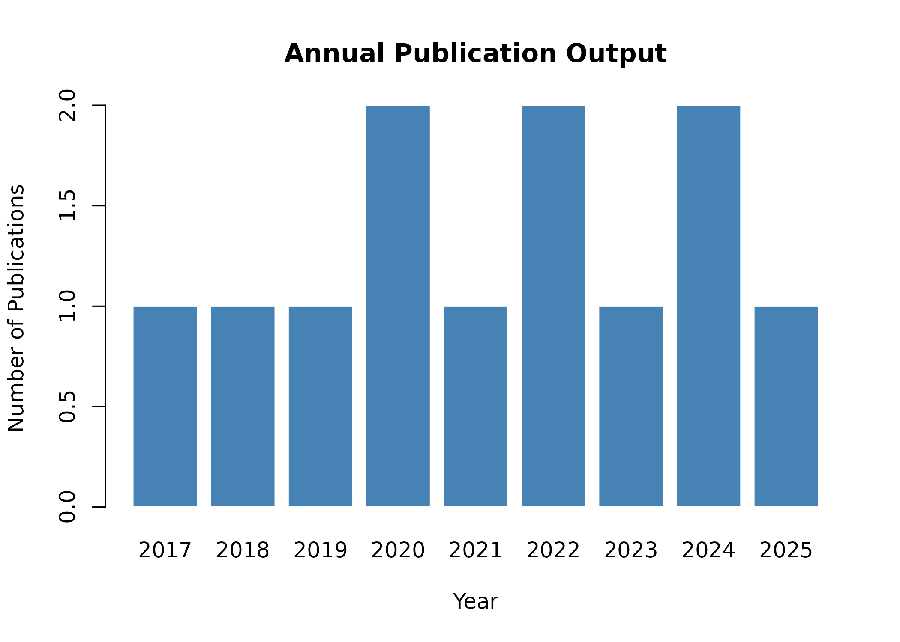
Figure 1. Annual publication output
# Plot annual citations
barplot(
desc$annual$citations,
names.arg = desc$annual$year,
main = "Annual Citation Accumulation",
xlab = "Year",
ylab = "Total Citations",
col = "darkorange",
border = "white"
)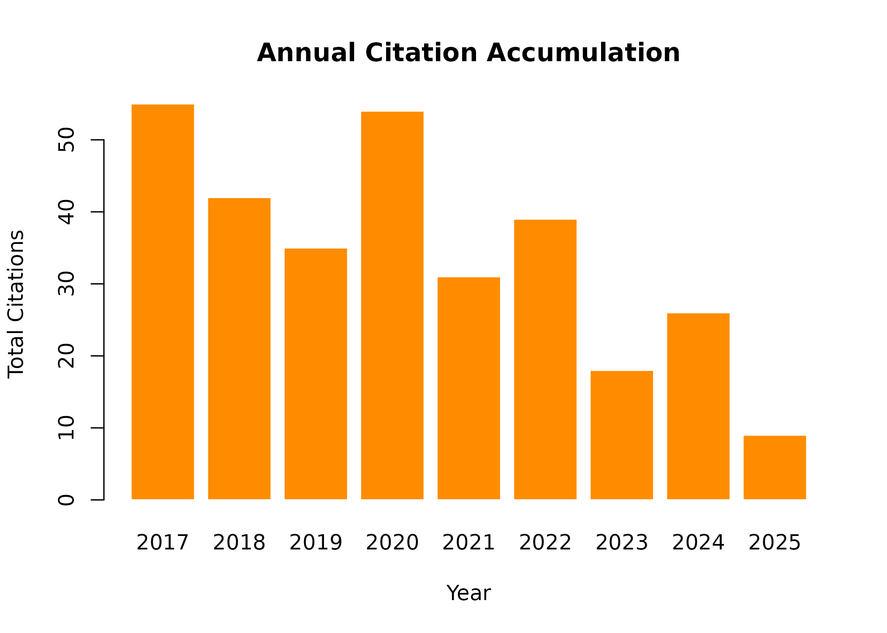
Figure 2. Annual citation accumulation
Top sources
# Most frequent publication sources
desc$top_sources
#>
#> Soil Science Agricultural Systems Agronomy Reviews
#> 2 1 1
#> Crop Science Field Crops Plant Nutrition
#> 1 1 1
#> Plant Stress Precision Agriculture Remote Sensing
#> 1 1 1
#> Soil Biology Sustainable Agriculture
#> 1 1Interpreting source distribution
A concentrated source distribution may indicate:
- Field-specific journals: Specialization in a narrow subfield
- Database bias: Overrepresentation of certain venues in the source database
- Regional patterns: Certain journals dominate in particular regions
# Visualize top sources (top 8)
top_n <- min(8, length(desc$top_sources))
barplot(
head(desc$top_sources, top_n),
main = "Top Publication Sources",
xlab = "Source",
ylab = "Number of Publications",
col = "darkgreen",
border = "white",
las = 2,
cex.names = 0.8
)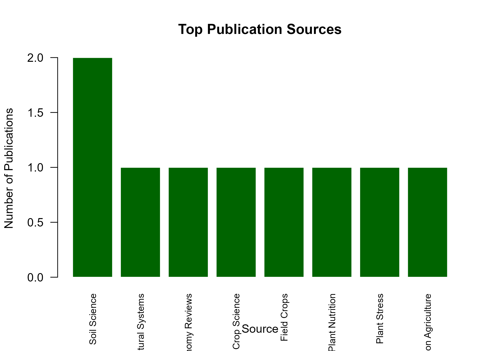
Figure 3. Top publication sources
Top keywords
# Most frequent author keywords
desc$top_keywords
#>
#> silicon cover crops maize nitrogen
#> 3 2 2 2
#> salinity soil soybean aggregation
#> 2 2 2 1
#> climate-smart drought efficiency machine learning
#> 1 1 1 1
#> management meta-analysis phenotyping remote sensing
#> 1 1 1 1
#> rice rotation soil carbon soil microbiome
#> 1 1 1 1
#> stress uav wheat yield
#> 1 1 1 1Keyword analysis patterns
High-frequency keywords reveal:
- Core topics: Central themes in the research domain
- Methodological approaches: Common methods or techniques
- Emerging themes: New keywords appearing in recent years (see Section 7)
# Visualize top keywords (top 10)
top_kw <- min(10, length(desc$top_keywords))
barplot(
head(desc$top_keywords, top_kw),
main = "Top Author Keywords",
xlab = "Keyword",
ylab = "Frequency",
col = "purple",
border = "white",
las = 2,
cex.names = 0.7
)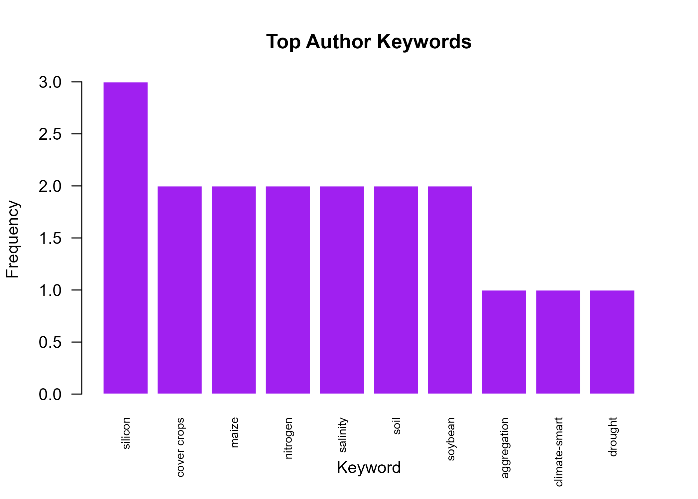
Figure 4. Top author keywords
Collaboration patterns from descriptions
While describe_biblio() does not directly compute
collaboration metrics, the underlying data enable basic collaboration
analysis:
# Average authors per document
avg_authors <- nrow(x$authorships) / nrow(x$works)
cat("Average authors per document:", round(avg_authors, 2), "\n")
#> Average authors per document: 2
# Author frequency
author_freq <- sort(table(x$authorships$author_id), decreasing = TRUE)
head(author_freq)
#>
#> A000008ad A00000f4d A00000f73 A0000043f A00000621 A000008c4
#> 4 4 4 3 3 3
# Map author IDs to names
author_names <- x$authors$display_name[
match(names(author_freq), x$authors$author_id)
]
data.frame(
author = author_names,
publications = as.integer(author_freq)
)
#> author publications
#> 1 Silva A 4
#> 2 Martins B 4
#> 3 Pereira W 4
#> 4 Rao F 3
#> 5 Lima D 3
#> 6 Costa C 3
#> 7 Gomez E 3Geographic distribution (if available)
If your data includes country or affiliation information, geographic analysis is possible:
# Example: if affiliations are available in your data
# geo_data <- x$works$country
# table(geo_data)
#
# # For OpenAlex data, affiliations are in the works table
# if ("country_code" %in% names(x$works)) {
# geo_table <- sort(table(x$works$country_code), decreasing = TRUE)
# head(geo_table, 10)
# }5. Author-level metrics with biblio_metrics()
Function overview
biblio_metrics() computes author-level bibliometric
indices. It returns a data frame with:
| Column | Description |
|---|---|
author |
Author display name |
documents |
Number of publications |
citations |
Total citations received |
h_index |
Hirsch index |
g_index |
Egghe’s g-index |
m_index |
h-index / career length |
Basic usage
# Compute author-level metrics
metrics <- biblio_metrics(x)
# View all metrics
metrics
#> author documents citations h_index g_index m_index
#> A0000043f Rao F 3 61 3 3 0.7500000
#> A00000621 Lima D 3 62 3 3 0.6000000
#> A000008ad Silva A 4 137 4 4 0.4444444
#> A000008c4 Costa C 3 65 3 3 0.5000000
#> A00000905 Gomez E 3 103 3 3 0.5000000
#> A00000f4d Martins B 4 97 4 4 0.6666667
#> A00000f73 Pereira W 4 93 4 4 0.5000000Understanding h-index
The h-index (Hirsch, 2005) is defined as:
An author has index h if h of their papers have at least h citations each.
# Example: understanding h-index calculation
# Take an author's citation counts sorted descending
example_citations <- sort(metrics$citations, decreasing = TRUE)[1]
example_h <- metrics$h_index[1]
cat("Example author:", metrics$author[1], "\n")
#> Example author: Rao F
cat("Documents:", metrics$documents[1], "\n")
#> Documents: 3
cat("Total citations:", metrics$citations[1], "\n")
#> Total citations: 61
cat("h-index:", example_h, "\n")
#> h-index: 3Properties of h-index
- Robustness: Insensitive to a single highly-cited paper
- Cumulative: Only increases over time (cannot decrease)
- Field-dependent: Varying benchmark values across disciplines
- Career-stage dependent: Favors senior researchers
Limitations of h-index
# The h-index cannot capture:
# 1. A researcher with 1 paper with 1000 citations
# h-index = 1, despite high impact
#
# 2. A researcher with 100 papers each with 10 citations
# h-index = 10, same as someone with 10 papers with 10 citations
#
# 3. Different career lengths
# h-index naturally increases with time activeUnderstanding g-index
The g-index (Egghe, 2006) addresses some h-index limitations:
An author has index g if the top g papers account for at least g² citations cumulatively.
# Compare h and g indices
metrics[, c("author", "h_index", "g_index")]
#> author h_index g_index
#> A0000043f Rao F 3 3
#> A00000621 Lima D 3 3
#> A000008ad Silva A 4 4
#> A000008c4 Costa C 3 3
#> A00000905 Gomez E 3 3
#> A00000f4d Martins B 4 4
#> A00000f73 Pereira W 4 4
# The g-index is always >= h-index
all(metrics$g_index >= metrics$h_index)
#> [1] TRUEUnderstanding m-index
The m-index (h-index divided by career length) normalizes for career stage:
# m-index: h-index per active year
metrics[, c("author", "h_index", "m_index")]
#> author h_index m_index
#> A0000043f Rao F 3 0.7500000
#> A00000621 Lima D 3 0.6000000
#> A000008ad Silva A 4 0.4444444
#> A000008c4 Costa C 3 0.5000000
#> A00000905 Gomez E 3 0.5000000
#> A00000f4d Martins B 4 0.6666667
#> A00000f73 Pereira W 4 0.5000000
# Interpretation: higher m-index suggests faster impact accumulation
# But requires careful interpretation for very short careersInterpreting m-index
# Career length calculation
# (internal to biblio_metrics: max_year - min_year + 1)
# m-index = h_index / career_years
# Example interpretation
cat("Author with h=3 in 5 years: m =", round(3/5, 2), "\n")
#> Author with h=3 in 5 years: m = 0.6
cat("Author with h=3 in 2 years: m =", round(3/2, 2), "\n")
#> Author with h=3 in 2 years: m = 1.5
cat("The second author accumulates impact faster\n")
#> The second author accumulates impact fasterFiltering and ranking authors
# Authors with at least 2 documents
prolific <- subset(metrics, documents >= 2)
prolific
#> author documents citations h_index g_index m_index
#> A0000043f Rao F 3 61 3 3 0.7500000
#> A00000621 Lima D 3 62 3 3 0.6000000
#> A000008ad Silva A 4 137 4 4 0.4444444
#> A000008c4 Costa C 3 65 3 3 0.5000000
#> A00000905 Gomez E 3 103 3 3 0.5000000
#> A00000f4d Martins B 4 97 4 4 0.6666667
#> A00000f73 Pereira W 4 93 4 4 0.5000000
# Top authors by citations
metrics[order(-metrics$citations), ]
#> author documents citations h_index g_index m_index
#> A000008ad Silva A 4 137 4 4 0.4444444
#> A00000905 Gomez E 3 103 3 3 0.5000000
#> A00000f4d Martins B 4 97 4 4 0.6666667
#> A00000f73 Pereira W 4 93 4 4 0.5000000
#> A000008c4 Costa C 3 65 3 3 0.5000000
#> A00000621 Lima D 3 62 3 3 0.6000000
#> A0000043f Rao F 3 61 3 3 0.7500000
# Top authors by h-index
metrics[order(-metrics$h_index), ]
#> author documents citations h_index g_index m_index
#> A000008ad Silva A 4 137 4 4 0.4444444
#> A00000f4d Martins B 4 97 4 4 0.6666667
#> A00000f73 Pereira W 4 93 4 4 0.5000000
#> A0000043f Rao F 3 61 3 3 0.7500000
#> A00000621 Lima D 3 62 3 3 0.6000000
#> A000008c4 Costa C 3 65 3 3 0.5000000
#> A00000905 Gomez E 3 103 3 3 0.5000000Visualizing author metrics
# Scatter plot: documents vs citations
plot(
metrics$documents,
metrics$citations,
main = "Author Productivity vs. Impact",
xlab = "Number of Documents",
ylab = "Total Citations",
pch = 19,
col = "steelblue",
cex = 1.5
)
text(
metrics$documents,
metrics$citations,
labels = metrics$author,
pos = 4,
cex = 0.7
)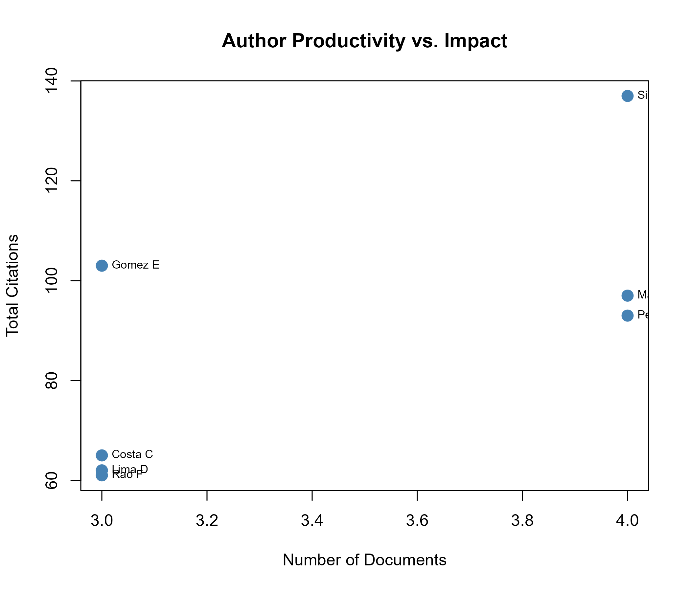
Figure 5. Author metrics: documents vs citations
# Barplot of h-indices
barplot(
metrics$h_index,
names.arg = metrics$author,
main = "Author h-indices",
xlab = "Author",
ylab = "h-index",
col = "darkred",
border = "white",
las = 2,
cex.names = 0.7
)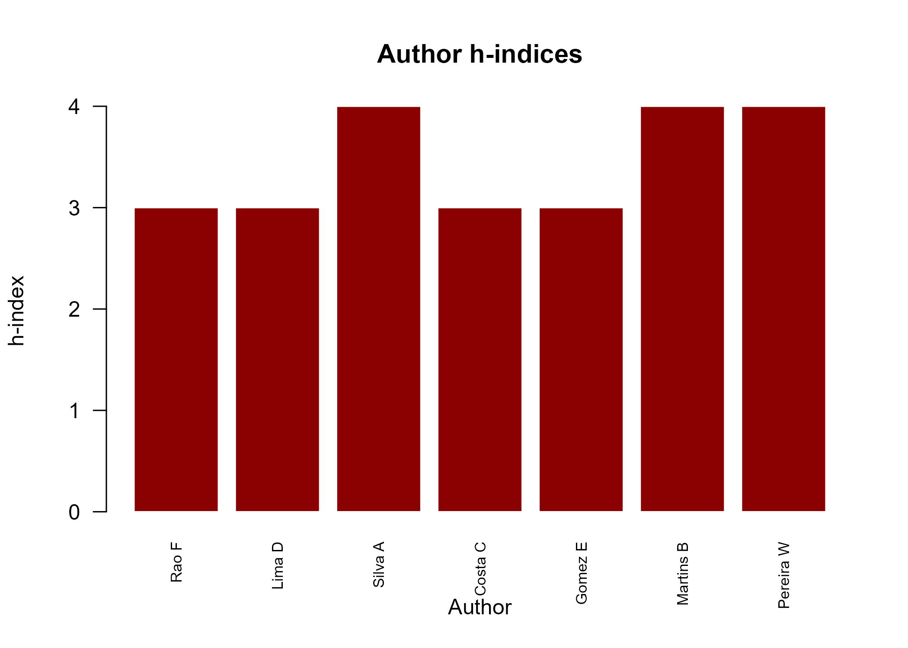
Figure 6. Author h-index comparison
6. Citation analysis
Raw citation counts
Citation counts are the simplest measure of impact, but require careful interpretation:
# Distribution of citations
summary(x$works$cited_by_count)
#> Min. 1st Qu. Median Mean 3rd Qu. Max.
#> 9.00 16.25 24.00 25.75 32.00 55.00
# Highly cited works
head(x$works[order(-x$works$cited_by_count), c("title", "year", "cited_by_count")], 5)
#> title year cited_by_count
#> 7 Salinity responses of wheat 2017 55
#> 1 Silicon and salinity tolerance in rice 2018 42
#> 2 Soil carbon under cover crops 2019 35
#> 4 Silicon nutrition in maize drought 2021 31
#> 3 Remote sensing of soybean nitrogen 2020 28
# Citation distribution
hist(
x$works$cited_by_count,
main = "Distribution of Citation Counts",
xlab = "Citations",
ylab = "Number of Works",
col = "lightblue",
border = "white",
breaks = 10
)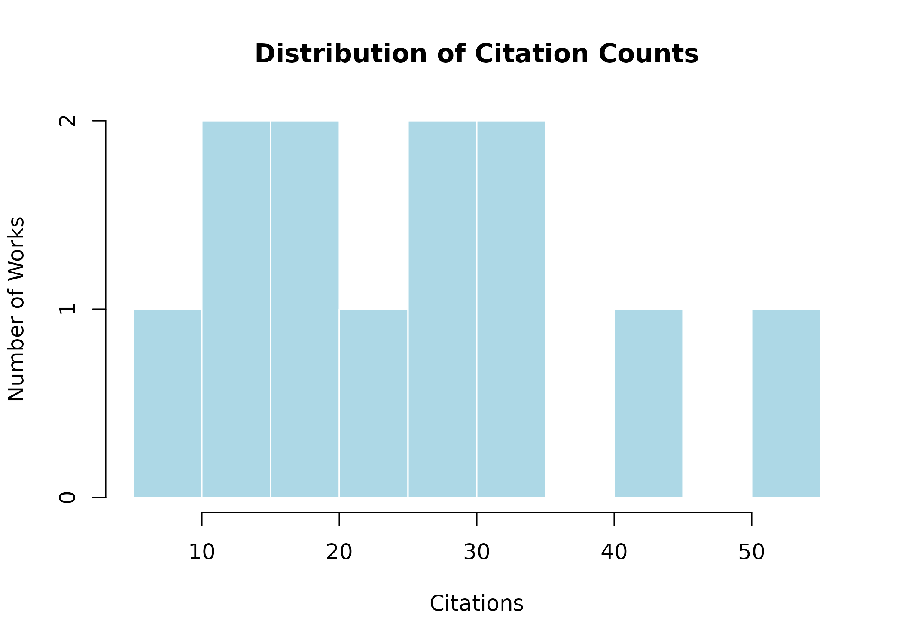
Why raw counts are problematic
Raw citation counts are influenced by:
- Publication year: Older papers accumulate more citations
- Field of study: Citation rates vary dramatically across disciplines
- Document type: Reviews receive more citations than original research
- Database coverage: Some databases count more citing sources
- Language bias: English-language papers receive more citations globally
# The problem: older papers appear more "impactful"
# due to time, not necessarily quality
x$works[, c("title", "year", "cited_by_count")]
#> title year cited_by_count
#> 1 Silicon and salinity tolerance in rice 2018 42
#> 2 Soil carbon under cover crops 2019 35
#> 3 Remote sensing of soybean nitrogen 2020 28
#> 4 Silicon nutrition in maize drought 2021 31
#> 5 Cover crops and soil aggregation 2022 22
#> 6 Machine learning for crop yield 2023 18
#> 7 Salinity responses of wheat 2017 55
#> 8 Soil microbiome under rotation 2020 26
#> 9 UAV phenotyping of soybean 2024 12
#> 10 Meta-analysis of silicon stress 2025 9
#> 11 Nitrogen use efficiency in maize 2022 17
#> 12 Climate-smart soil management 2024 147. Normalized citations with
normalized_citations()
Why normalization matters
Normalized citations address the confounding effect of time and field. The function computes:
where Expected is the mean citation count within the chosen stratum (default: publication year).
Basic usage
# Compute normalized citations (by year)
norm_cits <- normalized_citations(x)
head(norm_cits)
#> work_id citations expected normalized
#> 1 W0001f7e3 42 42.0 1.000000
#> 2 W000160f5 35 35.0 1.000000
#> 3 W0001b6e0 28 27.0 1.037037
#> 4 W0001b6e2 31 31.0 1.000000
#> 5 W0001932e 22 19.5 1.128205
#> 6 W00017da4 18 18.0 1.000000Interpreting normalized values
# Values > 1: above average for the stratum
# Values = 1: average
# Values < 1: below average
summary(norm_cits$normalized)
#> Min. 1st Qu. Median Mean 3rd Qu. Max.
#> 0.8718 0.9907 1.0000 1.0000 1.0093 1.1282
# Works above average
above_avg <- subset(norm_cits, normalized > 1 & !is.na(normalized))
nrow(above_avg)
#> [1] 3
above_avg
#> work_id citations expected normalized
#> 3 W0001b6e0 28 27.0 1.037037
#> 5 W0001932e 22 19.5 1.128205
#> 12 W00016cdd 14 13.0 1.076923
# Works below average
below_avg <- subset(norm_cits, normalized < 1 & !is.na(normalized))
nrow(below_avg)
#> [1] 3Contextual interpretation
# Merge with titles for context
norm_with_titles <- merge(
norm_cits,
x$works[, c("work_id", "title", "year", "cited_by_count")],
by = "work_id"
)
# View normalized scores with context
norm_with_titles[
order(-norm_with_titles$normalized),
c("title", "year", "cited_by_count", "expected", "normalized")
]
#> title year cited_by_count expected
#> 8 Cover crops and soil aggregation 2022 22 19.5
#> 4 Climate-smart soil management 2024 14 13.0
#> 10 Remote sensing of soybean nitrogen 2020 28 27.0
#> 2 Salinity responses of wheat 2017 55 55.0
#> 3 Soil carbon under cover crops 2019 35 35.0
#> 6 Machine learning for crop yield 2023 18 18.0
#> 7 Meta-analysis of silicon stress 2025 9 9.0
#> 11 Silicon nutrition in maize drought 2021 31 31.0
#> 12 Silicon and salinity tolerance in rice 2018 42 42.0
#> 5 Soil microbiome under rotation 2020 26 27.0
#> 1 UAV phenotyping of soybean 2024 12 13.0
#> 9 Nitrogen use efficiency in maize 2022 17 19.5
#> normalized
#> 8 1.1282051
#> 4 1.0769231
#> 10 1.0370370
#> 2 1.0000000
#> 3 1.0000000
#> 6 1.0000000
#> 7 1.0000000
#> 11 1.0000000
#> 12 1.0000000
#> 5 0.9629630
#> 1 0.9230769
#> 9 0.8717949Choosing strata
The default stratum is year, but you can normalize by
other fields:
# Normalize by source (journal)
# norm_by_source <- normalized_citations(x, strata = "source")
# head(norm_by_source)
# Normalize by multiple strata
# norm_multi <- normalized_citations(x, strata = c("year", "source"))
# head(norm_multi)Visualizing normalized citations
# Compare raw and normalized
par(mfrow = c(1, 2))
# Raw citations
hist(
norm_cits$citations,
main = "Raw Citations",
xlab = "Citations",
col = "lightcoral",
border = "white",
breaks = 8
)
# Normalized citations
hist(
norm_cits$normalized[!is.na(norm_cits$normalized)],
main = "Normalized Citations",
xlab = "Normalized Score",
col = "lightgreen",
border = "white",
breaks = 8
)
abline(v = 1, lty = 2, col = "red", lwd = 2)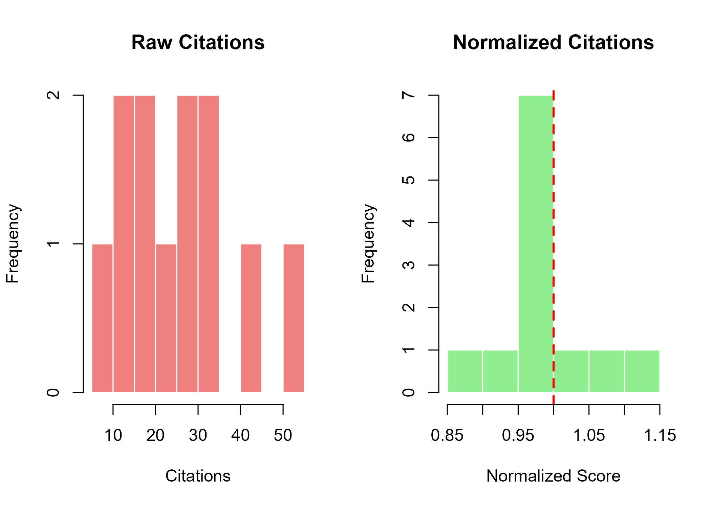
Figure 7. Raw vs normalized citations
# Barplot of normalized scores
norm_sorted <- norm_cits[order(-norm_cits$normalized), ]
norm_sorted <- norm_sorted[!is.na(norm_sorted$normalized), ]
barplot(
norm_sorted$normalized,
names.arg = paste0("W", seq_len(nrow(norm_sorted))),
main = "Normalized Citation Scores",
xlab = "Works (ranked)",
ylab = "Normalized Score",
col = ifelse(norm_sorted$normalized > 1, "darkgreen", "gray"),
border = "white",
las = 2,
cex.names = 0.6
)
abline(h = 1, lty = 2, col = "red", lwd = 2)
text(
x = 0.5,
y = 1.05,
labels = "Average = 1",
pos = 4,
col = "red",
cex = 0.8
)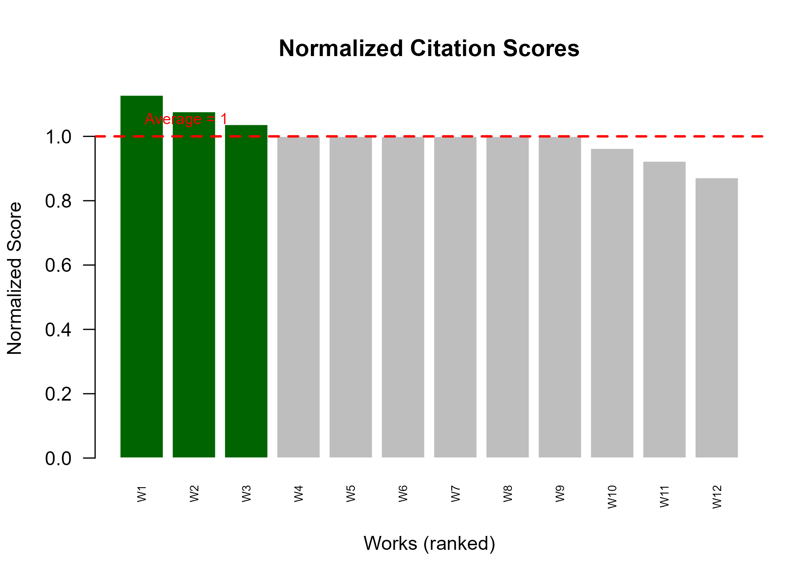
Figure 8. Normalized citation scores by work
8. Term frequency with term_frequency()
Function overview
term_frequency() extracts and counts terms from titles
or abstracts. It provides a simple but effective way to identify the
most common vocabulary in a corpus.
Basic usage
# Term frequency from titles
tf_title <- term_frequency(x)
head(tf_title, 15)
#> term n
#> 1 soil 4
#> 2 silicon 3
#> 3 cover 2
#> 4 crops 2
#> 5 maize 2
#> 6 nitrogen 2
#> 7 salinity 2
#> 8 soybean 2
#> 9 aggregation 1
#> 10 carbon 1
#> 11 climate-smart 1
#> 12 crop 1
#> 13 drought 1
#> 14 efficiency 1
#> 15 learning 1Parameters
# Default stopwords are removed
# You can customize them:
tf_custom <- term_frequency(
x,
field = "title",
stopwords = c("and", "the", "for", "with", "under", "of", "in", "to", "a", "an")
)
head(tf_custom, 10)
#> term n
#> 1 soil 4
#> 2 silicon 3
#> 3 cover 2
#> 4 crops 2
#> 5 maize 2
#> 6 nitrogen 2
#> 7 salinity 2
#> 8 soybean 2
#> 9 aggregation 1
#> 10 carbon 1
# Use abstracts (if available)
tf_abstract <- term_frequency(x, field = "abstract")
head(tf_abstract, 10)
#> [1] n
#> <0 rows> (or 0-length row.names)Visualizing term frequency
# Plot top 15 terms
top_terms <- head(tf_title, 15)
barplot(
top_terms$n,
names.arg = top_terms$term,
main = "Most Frequent Terms in Titles",
xlab = "Term",
ylab = "Frequency",
col = "darkblue",
border = "white",
las = 2,
cex.names = 0.7
)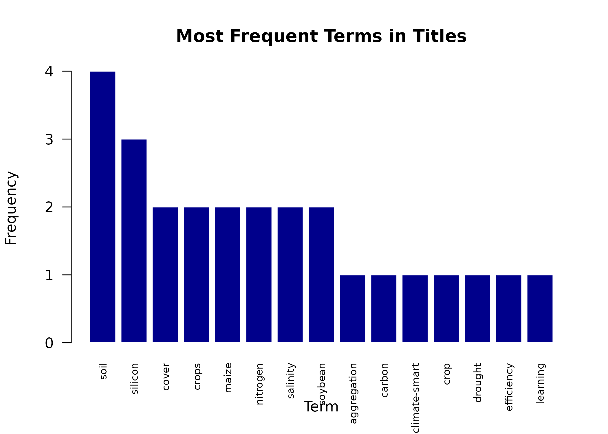
Figure 9. Top terms in titles
Interpreting term frequency
What frequent terms reveal
- Core vocabulary: Terms central to the research field (e.g., “soil”, “silicon”, “crop”)
- Methodological focus: Terms indicating research approach (e.g., “analysis”, “modeling”)
- Study systems: Organisms or environments studied (e.g., “rice”, “maize”, “soybean”)
Limitations of term frequency
# Common terms are not necessarily distinctive
# "analysis" appears frequently but doesn't characterize any specific topic
# See tfidf_terms() for distinctive terms
# Terms may have multiple meanings
# "model" could mean statistical model, crop model, etc.
# Context from abstracts often neededCombining with keyword analysis
# Compare title terms with author keywords
cat("Top title terms:\n")
#> Top title terms:
head(tf_title, 10)
#> term n
#> 1 soil 4
#> 2 silicon 3
#> 3 cover 2
#> 4 crops 2
#> 5 maize 2
#> 6 nitrogen 2
#> 7 salinity 2
#> 8 soybean 2
#> 9 aggregation 1
#> 10 carbon 1
cat("\nTop author keywords:\n")
#>
#> Top author keywords:
head(desc$top_keywords, 10)
#>
#> silicon cover crops maize nitrogen salinity
#> 3 2 2 2 2
#> soil soybean aggregation climate-smart drought
#> 2 2 1 1 19. TF-IDF analysis with tfidf_terms()
The TF-IDF concept
TF-IDF (Term Frequency–Inverse Document Frequency) measures how distinctive a term is for a particular group relative to the entire corpus.
The formula is:
where:
- = frequency of term in group
- = total number of groups
- = number of groups containing term
Basic usage
# TF-IDF by year (default)
tfidf_year <- tfidf_terms(x)
head(tfidf_year, 15)
#> term group n df tfidf
#> 1 aggregation 2022 1 1 2.197225
#> 4 carbon 2019 1 1 2.197225
#> 5 climate-smart 2024 1 1 2.197225
#> 8 crop 2023 1 1 2.197225
#> 11 drought 2021 1 1 2.197225
#> 12 efficiency 2022 1 1 2.197225
#> 13 for 2023 1 1 2.197225
#> 14 learning 2023 1 1 2.197225
#> 15 machine 2023 1 1 2.197225
#> 18 management 2024 1 1 2.197225
#> 19 meta-analysis 2025 1 1 2.197225
#> 20 microbiome 2020 1 1 2.197225
#> 23 nutrition 2021 1 1 2.197225
#> 24 phenotyping 2024 1 1 2.197225
#> 25 remote 2020 1 1 2.197225Grouping options
# TF-IDF by source
tfidf_source <- tfidf_terms(x, group = "source")
head(tfidf_source, 15)
#> term group n df tfidf
#> 6 cover Soil Science 2 1 4.795791
#> 8 crops Soil Science 2 1 4.795791
#> 34 soil Soil Science 2 3 2.598566
#> 1 aggregation Soil Science 1 1 2.397895
#> 4 carbon Soil Science 1 1 2.397895
#> 5 climate-smart Sustainable Agriculture 1 1 2.397895
#> 7 crop Agricultural Systems 1 1 2.397895
#> 9 drought Plant Nutrition 1 1 2.397895
#> 10 efficiency Crop Science 1 1 2.397895
#> 11 for Agricultural Systems 1 1 2.397895
#> 12 learning Agricultural Systems 1 1 2.397895
#> 13 machine Agricultural Systems 1 1 2.397895
#> 16 management Sustainable Agriculture 1 1 2.397895
#> 17 meta-analysis Agronomy Reviews 1 1 2.397895
#> 18 microbiome Soil Biology 1 1 2.397895Interpreting TF-IDF
High TF-IDF values
High TF-IDF indicates terms that are:
- Frequent in a specific group
- Rare across other groups
- Distinctive markers of that group
# Top distinctive terms by year
# These terms characterize specific years
head(tfidf_year[order(-tfidf_year$tfidf), ], 10)
#> term group n df tfidf
#> 1 aggregation 2022 1 1 2.197225
#> 4 carbon 2019 1 1 2.197225
#> 5 climate-smart 2024 1 1 2.197225
#> 8 crop 2023 1 1 2.197225
#> 11 drought 2021 1 1 2.197225
#> 12 efficiency 2022 1 1 2.197225
#> 13 for 2023 1 1 2.197225
#> 14 learning 2023 1 1 2.197225
#> 15 machine 2023 1 1 2.197225
#> 18 management 2024 1 1 2.197225
# Terms with zero TF-IDF appear in all groups equally
# They are common and not distinctive
zero_tfidf <- subset(tfidf_year, tfidf == 0)
head(zero_tfidf)
#> [1] term group n df tfidf
#> <0 rows> (or 0-length row.names)Examining specific years
# Distinctive terms for each year
years <- sort(unique(tfidf_year$group))
for (yr in head(years, 5)) {
cat("\nYear", yr, "- Top distinctive terms:\n")
yr_terms <- subset(tfidf_year, group == yr)
yr_terms <- yr_terms[order(-yr_terms$tfidf), ]
print(head(yr_terms[, c("term", "n", "tfidf")], 5))
}
#>
#> Year 2017 - Top distinctive terms:
#> term n tfidf
#> 26 responses 1 2.197225
#> 47 wheat 1 2.197225
#> 29 salinity 1 1.504077
#>
#> Year 2018 - Top distinctive terms:
#> term n tfidf
#> 27 rice 1 2.197225
#> 42 tolerance 1 2.197225
#> 2 and 1 1.504077
#> 30 salinity 1 1.504077
#> 32 silicon 1 1.098612
#>
#> Year 2019 - Top distinctive terms:
#> term n tfidf
#> 4 carbon 1 2.1972246
#> 6 cover 1 1.5040774
#> 9 crops 1 1.5040774
#> 44 under 1 1.5040774
#> 35 soil 1 0.8109302
#>
#> Year 2020 - Top distinctive terms:
#> term n tfidf
#> 20 microbiome 1 2.197225
#> 25 remote 1 2.197225
#> 28 rotation 1 2.197225
#> 31 sensing 1 2.197225
#> 21 nitrogen 1 1.504077
#>
#> Year 2021 - Top distinctive terms:
#> term n tfidf
#> 11 drought 1 2.197225
#> 23 nutrition 1 2.197225
#> 16 maize 1 1.504077
#> 33 silicon 1 1.098612Visualizing TF-IDF
# Top TF-IDF terms
top_tfidf <- head(tfidf_year[order(-tfidf_year$tfidf), ], 15)
barplot(
top_tfidf$tfidf,
names.arg = paste(top_tfidf$term, top_tfidf$group, sep = "\n"),
main = "Top Distinctive Terms (TF-IDF)",
xlab = "Term (Year)",
ylab = "TF-IDF Score",
col = "darkviolet",
border = "white",
las = 2,
cex.names = 0.6
)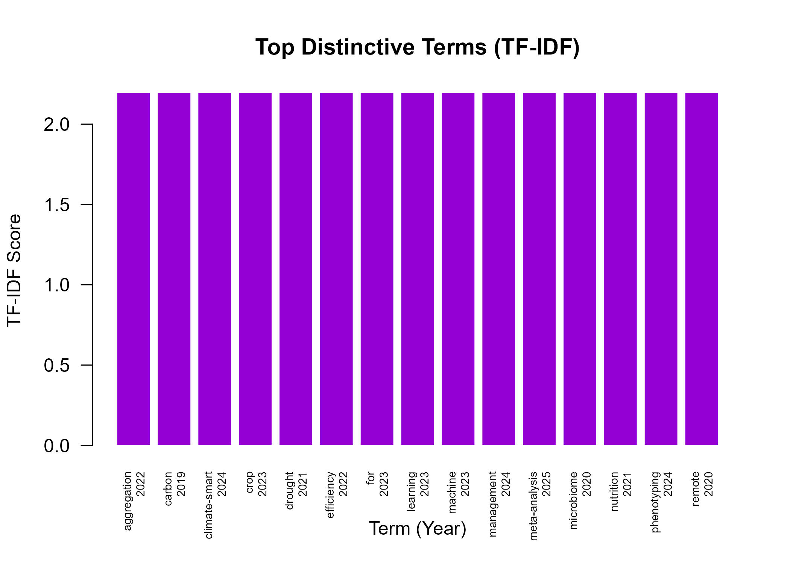
Figure 10. Top TF-IDF terms by year
# TF-IDF by source
top_src_tfidf <- head(
tfidf_source[order(-tfidf_source$tfidf), ],
12
)
barplot(
top_src_tfidf$tfidf,
names.arg = paste(
top_src_tfidf$term,
substr(top_src_tfidf$group, 1, 10),
sep = "\n"
),
main = "Distinctive Terms by Source (TF-IDF)",
xlab = "Term (Source)",
ylab = "TF-IDF Score",
col = "darkcyan",
border = "white",
las = 2,
cex.names = 0.6
)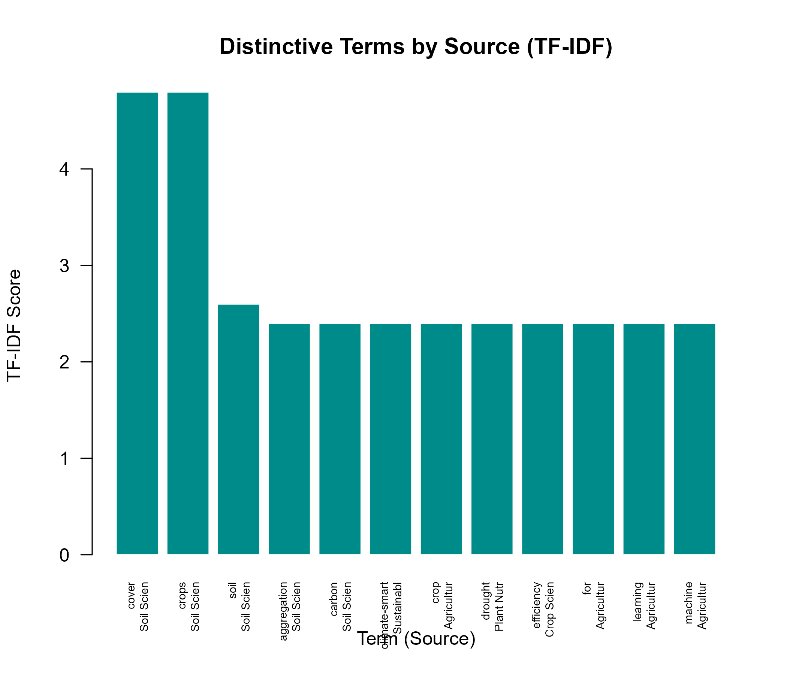
Figure 11. Top TF-IDF terms by source
TF-IDF vs term frequency
# Compare: most frequent terms vs most distinctive terms
cat("Most frequent title terms:\n")
#> Most frequent title terms:
print(head(tf_title, 5))
#> term n
#> 1 soil 4
#> 2 silicon 3
#> 3 cover 2
#> 4 crops 2
#> 5 maize 2
cat("\nMost distinctive terms (TF-IDF):\n")
#>
#> Most distinctive terms (TF-IDF):
print(head(tfidf_year[order(-tfidf_year$tfidf), ], 5))
#> term group n df tfidf
#> 1 aggregation 2022 1 1 2.197225
#> 4 carbon 2019 1 1 2.197225
#> 5 climate-smart 2024 1 1 2.197225
#> 8 crop 2023 1 1 2.197225
#> 11 drought 2021 1 1 2.197225
# Key difference:
# - Term frequency highlights common, possibly generic terms
# - TF-IDF highlights terms distinctive to specific subgroups10. Trending topics with trend_topics()
Function overview
trend_topics() identifies topics that are gaining or
losing prominence over time by tracking keyword frequencies across
years.
Basic usage
# Topic trajectories
trends <- trend_topics(x)
head(trends, 20)
#> year keyword n
#> 1 2022 aggregation 1
#> 2 2024 climate-smart 1
#> 3 2019 cover crops 1
#> 4 2022 cover crops 1
#> 5 2021 drought 1
#> 6 2022 efficiency 1
#> 7 2023 machine learning 1
#> 8 2021 maize 1
#> 9 2022 maize 1
#> 10 2024 management 1
#> 11 2025 meta-analysis 1
#> 12 2020 nitrogen 1
#> 13 2022 nitrogen 1
#> 14 2024 phenotyping 1
#> 15 2020 remote sensing 1
#> 16 2018 rice 1
#> 17 2020 rotation 1
#> 18 2017 salinity 1
#> 19 2018 salinity 1
#> 20 2018 silicon 1Filtering by minimum frequency
# Only keywords appearing at least 2 times total
trends_filtered <- trend_topics(x, min_total = 2)
head(trends_filtered, 15)
#> year keyword n
#> 1 2019 cover crops 1
#> 2 2022 cover crops 1
#> 3 2021 maize 1
#> 4 2022 maize 1
#> 5 2020 nitrogen 1
#> 6 2022 nitrogen 1
#> 7 2017 salinity 1
#> 8 2018 salinity 1
#> 9 2018 silicon 1
#> 10 2021 silicon 1
#> 11 2025 silicon 1
#> 12 2022 soil 1
#> 13 2024 soil 1
#> 14 2020 soybean 1
#> 15 2024 soybean 1Visualizing topic trends
# Select top keywords for visualization
top_kw <- names(head(sort(
tapply(trends$n, trends$keyword, sum),
decreasing = TRUE
), 5))
# Subset data
trends_top <- subset(trends, keyword %in% top_kw)
# Create time series plot
years_range <- sort(unique(trends_top$year))
plot(
NULL,
xlim = range(years_range),
ylim = range(trends_top$n),
main = "Topic Trajectories",
xlab = "Year",
ylab = "Frequency",
type = "n"
)
colors <- c("red", "blue", "darkgreen", "purple", "orange")
for (i in seq_along(top_kw)) {
kw_data <- subset(trends_top, keyword == top_kw[i])
lines(
kw_data$year,
kw_data$n,
type = "b",
col = colors[i],
pch = 19,
lwd = 2
)
}
legend(
"topleft",
legend = top_kw,
col = colors,
lwd = 2,
pch = 19,
cex = 0.8
)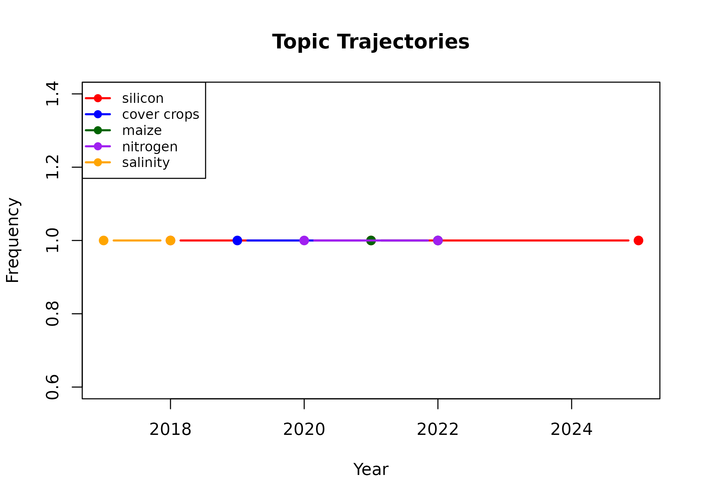
Figure 12. Topic trajectories over time
Interpreting trends
Rising topics
# Identify topics with increasing frequency
# Simple approach: compare recent vs earlier years
recent_year <- max(x$works$year, na.rm = TRUE)
earlier_year <- recent_year - 2
recent_trends <- subset(trends, year >= earlier_year)
early_trends <- subset(trends, year < earlier_year)
# Frequency in recent vs earlier periods
recent_freq <- tapply(recent_trends$n, recent_trends$keyword, sum)
early_freq <- tapply(early_trends$n, early_trends$keyword, sum)
# Topics appearing in recent but not earlier
new_topics <- setdiff(names(recent_freq), names(early_freq))
if (length(new_topics) > 0) {
cat("Emerging topics (recent only):\n")
print(recent_freq[new_topics])
}
#> Emerging topics (recent only):
#> climate-smart machine learning management meta-analysis
#> 1 1 1 1
#> phenotyping stress uav yield
#> 1 1 1 1Declining topics
# Topics in earlier but not recent
declining <- setdiff(names(early_freq), names(recent_freq))
if (length(declining) > 0) {
cat("Declining topics (earlier only):\n")
print(early_freq[declining])
}
#> Declining topics (earlier only):
#> aggregation cover crops drought efficiency maize
#> 1 2 1 1 2
#> nitrogen remote sensing rice rotation salinity
#> 2 1 1 1 2
#> soil carbon soil microbiome wheat
#> 1 1 1Stable topics
# Topics present in both periods
stable <- intersect(names(recent_freq), names(early_freq))
if (length(stable) > 0) {
cat("Stable topics (present in both periods):\n")
comparison <- data.frame(
topic = stable,
earlier = as.integer(early_freq[stable]),
recent = as.integer(recent_freq[stable])
)
comparison$change <- comparison$recent - comparison$earlier
print(comparison)
}
#> Stable topics (present in both periods):
#> topic earlier recent change
#> 1 silicon 2 1 -1
#> 2 soil 1 1 0
#> 3 soybean 1 1 011. Disruption index with disruption_index()
The disruption concept
The disruption index (CD index, Funk & Owen-Smith, 2017; Wu, Wang, & Evans, 2019) measures whether a work creates a new paradigm (disruptive) or consolidates existing knowledge (consolidating).
Basic usage
# Create example citation network
# This requires citation edges (who cites whom)
citation_edges <- data.frame(
citing_id = c("w1", "w2", "w3", "w4", "w5", "w2", "w4"),
cited_id = c("focal", "focal", "focal", "focal", "focal", "ref1", "ref1")
)
# Focal work's references
focal_refs <- c("ref1")
# Compute disruption index
di <- disruption_index("focal", citation_edges, focal_refs)
di
#> focal_id N_i N_j N_k disruption
#> 1 focal 3 2 0 0.2Interpreting results
# Interpret the disruption index
cat("N_i (cites focal only):", di$N_i, "\n")
#> N_i (cites focal only): 3
cat("N_j (cites both):", di$N_j, "\n")
#> N_j (cites both): 2
cat("N_k (cites references only):", di$N_k, "\n")
#> N_k (cites references only): 0
cat("Disruption index:", round(di$disruption, 3), "\n\n")
#> Disruption index: 0.2
if (!is.na(di$disruption) && di$disruption > 0.5) {
cat("Interpretation: Work is DISRUPTIVE\n")
} else if (!is.na(di$disruption) && di$disruption < -0.5) {
cat("Interpretation: Work is CONSOLIDATING\n")
} else {
cat("Interpretation: Work has MIXED influence\n")
}
#> Interpretation: Work has MIXED influenceMore complex examples
# Example with multiple references
complex_edges <- data.frame(
citing_id = c(
"a", "a", "b", "b", "c", "d", "e",
"c", "d", "f", "g"
),
cited_id = c(
"focal", "ref1", "focal", "ref2", "focal",
"focal", "focal", "ref1", "ref2", "ref1", "ref2"
)
)
disruption_index("focal", complex_edges, c("ref1", "ref2"))
#> focal_id N_i N_j N_k disruption
#> 1 focal 1 4 2 -0.4285714Combining with other metrics
# For a comprehensive analysis, combine disruption with:
# 1. Citation counts (normalized_citations)
# 2. Author metrics (biblio_metrics)
# 3. Term analysis (tfidf_terms)
#
# This provides a multi-dimensional view of impact:
# - Citations: how much the work is used
# - Disruption: whether it changes the field
# - Terms: what themes it introduces12. Step-by-step workflow
Complete example
Here is a full workflow from raw data to comprehensive descriptive analysis:
# ============================================
# Step 1: Load and prepare data
# ============================================
library(biblioIntegrator)
# Load example data
raw <- example_biblio()
cat("Raw data:", nrow(raw), "records\n")
# Construct project
x <- as_biblio_project(raw, source = "analysis")
x
# ============================================
# Step 2: Descriptive summary
# ============================================
desc <- describe_biblio(x)
cat("\n=== Descriptive Summary ===\n")
cat("Documents:", desc$n_documents, "\n")
cat("Year range:", desc$years[1], "-", desc$years[2], "\n")
cat("Total citations:", desc$total_citations, "\n")
cat("\nAnnual production:\n")
print(desc$annual)
cat("\nTop sources:\n")
print(head(desc$top_sources, 5))
cat("\nTop keywords:\n")
print(head(desc$top_keywords, 10))
# ============================================
# Step 3: Author metrics
# ============================================
metrics <- biblio_metrics(x)
cat("\n=== Author Metrics ===\n")
print(metrics)
cat("\nProlific authors (≥2 papers):\n")
print(subset(metrics, documents >= 2))
# ============================================
# Step 4: Citation analysis
# ============================================
# Raw citations
cat("\n=== Citation Analysis ===\n")
cat("Mean citations:", mean(x$works$cited_by_count), "\n")
cat("Median citations:", median(x$works$cited_by_count), "\n")
# Normalized citations
norm <- normalized_citations(x)
cat("\nNormalized citations (summary):\n")
summary(norm$normalized[!is.na(norm$normalized)])
# ============================================
# Step 5: Text analysis
# ============================================
# Term frequency
tf <- term_frequency(x)
cat("\n=== Term Frequency ===\n")
print(head(tf, 10))
# TF-IDF
tfidf <- tfidf_terms(x)
cat("\n=== TF-IDF (Top 10) ===\n")
print(head(tfidf[order(-tfidf$tfidf), ], 10))
# ============================================
# Step 6: Trend analysis
# ============================================
trends <- trend_topics(x, min_total = 2)
cat("\n=== Trending Topics ===\n")
print(trends)
# ============================================
# Step 7: Visualizations
# ============================================
par(mfrow = c(2, 2))
# Annual publications
barplot(
desc$annual$documents,
names.arg = desc$annual$year,
main = "Annual Output",
col = "steelblue"
)
# Author h-indices
barplot(
metrics$h_index,
names.arg = metrics$author,
main = "Author h-indices",
col = "darkred",
las = 2,
cex.names = 0.6
)
# Top terms
barplot(
head(tf$n, 10),
names.arg = head(tf$term, 10),
main = "Top Title Terms",
col = "darkblue",
las = 2,
cex.names = 0.7
)
# Normalized citations
hist(
norm$normalized[!is.na(norm$normalized)],
main = "Normalized Citations",
col = "lightgreen",
breaks = 8
)
abline(v = 1, lty = 2, col = "red")
par(mfrow = c(1, 1))Workflow with your own data
# ============================================
# Working with your own data
# ============================================
# Option 1: From CSV
# my_data <- read.csv("my_bibliography.csv")
# x <- as_biblio_project(my_data, source = "my study")
# Option 2: From bibliometrix (if installed)
# x <- biblio_import(
# "my_export.bib",
# dbsource = "scopus",
# format = "bibtex"
# )
# Then run the same descriptive workflow
# ...13. Common mistakes and pitfalls
Mistake 1: Using raw citation counts without normalization
# WRONG: Comparing raw citations across years
# An older paper with 100 citations might be less impactful
# than a recent paper with 20 citations
# RIGHT: Use normalized citations
norm <- normalized_citations(x)
# A normalized score of 1.5 means 50% above the year average
# regardless of how old the paper isMistake 2: Ignoring field-specific citation patterns
# WRONG: Comparing h-indices across different fields
# Medicine typically has higher citation rates than Mathematics
# RIGHT: Compare within fields or use field-normalized metrics
# bibliometrix provides field-normalized indicators
# When using biblio_metrics(), interpret relative to field normsMistake 3: Confusing term frequency with importance
# WRONG: Assuming the most frequent terms are the most important
tf <- term_frequency(x)
# "analysis" might be frequent but not distinctive
# RIGHT: Use TF-IDF for distinctive terms
tfidf <- tfidf_terms(x)
# High TF-IDF terms are both frequent in a group AND rare elsewhereMistake 4: Not considering time window effects
# WRONG: Not accounting for publication year in trend analysis
# A keyword appearing in 2024 but not 2018 might simply be new
# rather than "trending"
# RIGHT: Use trend_topics() which tracks temporal patterns
# Look for topics with *increasing* frequency, not just new onesMistake 5: Over-interpreting small corpora
# WRONG: Drawing strong conclusions from < 50 documents
# Small samples lead to unstable metrics
# RIGHT: Report confidence and sample size
cat("Corpus size:", nrow(x$works), "\n")
#> Corpus size: 12
cat("Note: Small corpora yield unstable metrics.\n")
#> Note: Small corpora yield unstable metrics.
cat("Consider bootstrap confidence intervals for small samples.\n")
#> Consider bootstrap confidence intervals for small samples.Mistake 6: Double-counting authors
# WRONG: Counting the same author twice due to name variants
# "Smith J" and "J. Smith" might be the same person
# RIGHT: Check for duplicates
# biblioIntegrator uses author_id deduplication internally
# But name variants require manual curation
cat("Number of unique authors:", nrow(x$authors), "\n")
#> Number of unique authors: 7
cat("Check for potential name duplicates:\n")
#> Check for potential name duplicates:
head(x$authors, 10)
#> author_id display_name
#> Silva A A000008ad Silva A
#> Pereira W A00000f73 Pereira W
#> Martins B A00000f4d Martins B
#> Costa C A000008c4 Costa C
#> Lima D A00000621 Lima D
#> Gomez E A00000905 Gomez E
#> Rao F A0000043f Rao F14. Advanced analysis patterns
Combining multiple functions
# Create a comprehensive descriptive profile
create_corpus_profile <- function(x) {
# Descriptive summary
desc <- describe_biblio(x)
# Author metrics
metrics <- biblio_metrics(x)
# Normalized citations
norm <- normalized_citations(x)
# Term analysis
tf <- term_frequency(x)
tfidf <- tfidf_terms(x)
# Return comprehensive list
list(
summary = desc,
authors = metrics,
citations = norm,
terms = tf,
distinctive_terms = tfidf
)
}
profile <- create_corpus_profile(x)
str(profile, max.level = 2)
#> List of 5
#> $ summary :List of 6
#> ..$ n_documents : int 12
#> ..$ years : int [1:2] 2017 2025
#> ..$ total_citations: num 309
#> ..$ annual :'data.frame': 9 obs. of 3 variables:
#> ..$ top_sources : 'table' int [1:11(1d)] 2 1 1 1 1 1 1 1 1 1 ...
#> .. ..- attr(*, "dimnames")=List of 1
#> ..$ top_keywords : 'table' int [1:24(1d)] 3 2 2 2 2 2 2 1 1 1 ...
#> .. ..- attr(*, "dimnames")=List of 1
#> $ authors :'data.frame': 7 obs. of 6 variables:
#> ..$ author : chr [1:7] "Rao F" "Lima D" "Silva A" "Costa C" ...
#> ..$ documents: int [1:7] 3 3 4 3 3 4 4
#> ..$ citations: num [1:7] 61 62 137 65 103 97 93
#> ..$ h_index : num [1:7] 3 3 4 3 3 4 4
#> ..$ g_index : num [1:7] 3 3 4 3 3 4 4
#> ..$ m_index : num [1:7] 0.75 0.6 0.444 0.5 0.5 ...
#> $ citations :'data.frame': 12 obs. of 4 variables:
#> ..$ work_id : chr [1:12] "W0001f7e3" "W000160f5" "W0001b6e0" "W0001b6e2" ...
#> ..$ citations : num [1:12] 42 35 28 31 22 18 55 26 12 9 ...
#> ..$ expected : num [1:12] 42 35 27 31 19.5 18 55 27 13 9 ...
#> ..$ normalized: num [1:12] 1 1 1.04 1 1.13 ...
#> $ terms :'data.frame': 32 obs. of 2 variables:
#> ..$ term: chr [1:32] "soil" "silicon" "cover" "crops" ...
#> ..$ n : int [1:32] 4 3 2 2 2 2 2 2 1 1 ...
#> $ distinctive_terms:'data.frame': 48 obs. of 5 variables:
#> ..$ term : chr [1:48] "aggregation" "carbon" "climate-smart" "crop" ...
#> ..$ group: chr [1:48] "2022" "2019" "2024" "2023" ...
#> ..$ n : num [1:48] 1 1 1 1 1 1 1 1 1 1 ...
#> ..$ df : int [1:48] 1 1 1 1 1 1 1 1 1 1 ...
#> ..$ tfidf: num [1:48] 2.2 2.2 2.2 2.2 2.2 ...Exporting results
# Export descriptive results to CSV
write.csv(
describe_biblio(x)$annual,
"annual_production.csv",
row.names = FALSE
)
write.csv(
biblio_metrics(x),
"author_metrics.csv",
row.names = FALSE
)
write.csv(
normalized_citations(x),
"normalized_citations.csv",
row.names = FALSE
)Combining with network analysis
# For a complete analysis, combine descriptive and network approaches:
# 1. Descriptive overview (this vignette)
# desc <- describe_biblio(x)
# 2. Network structure (see v05-networks.Rmd)
# g <- bibliographic_network(x, "coauthor")
# centrality <- network_centrality(g)
# 3. Compare descriptive and network-based author rankings
# metrics <- biblio_metrics(x)
# Compare metrics$h_index with centrality metrics15. Interpretation guidelines
Contextualizing metrics
Every metric should be interpreted in context:
| Metric | What it measures | Context needed |
|---|---|---|
| Citation count | Attention received | Field, year, document type |
| h-index | Sustained impact | Career length, field norms |
| g-index | Weighted impact | Alternative to h-index |
| m-index | Impact velocity | Career stage |
| Normalized citations | Relative impact | Stratum definition |
| TF-IDF | Term distinctiveness | Group definition |
| Disruption index | Paradigm influence | Citation network completeness |
Red flags to watch for
# Potential data quality issues:
# 1. Very high citation counts for recent papers
# -> Possible database error or preprint citation
#
# 2. Very low h-indices despite high publication counts
# -> Possible predatory journal publications
#
# 3. All TF-IDF values near zero
# -> Possible homogenized corpus or data error
#
# 4. Missing keywords for most documents
# -> Database export issue or author oversight
#
# 5. Negative or zero normalized citations
# -> Calculation error or edge caseReporting best practices
# When reporting descriptive bibliometric findings:
# 1. Always report corpus size and time range
# "This study analyzed N = X publications from year1 to year2."
# 2. Report central tendency AND dispersion
# "Mean citations were M = X (SD = Y, range = A-B)."
# 3. Use normalized metrics for comparisons
# "After normalization, work A scored 1.5× the year average."
# 4. Acknowledge limitations
# "Results are limited to records in the [database] and may
# not reflect the complete literature."
# 5. Visualize key findings
# Include publication trends, top authors, and key term clouds16. References
Core bibliometric methods
Aria, M., & Cuccurullo, C. (2017). bibliometrix: An R-tool for comprehensive science mapping analysis. Journal of Informetrics, 11(4), 959–975. doi:10.1016/j.joi.2017.08.007
Hirsch, J. E. (2005). An index to quantify an individual’s scientific research output. Proceedings of the National Academy of Sciences, 102(46), 16569–16572. doi:10.1073/pnas.0507655102
Egghe, L. (2006). Theory and practise of the g-index. Scientometrics, 69(1), 131–152. doi:10.1007/s11192-006-0144-7
Disruption and innovation
Funk, R. J., & Owen-Smith, J. (2017). A dynamic network measure of technological change. Management Science, 63(3), 791–817. doi:10.1287/mnsc.2015.2366
Wu, L., Wang, D., & Evans, J. A. (2019). Large teams develop and small teams disrupt science and technology. Nature, 566(7744), 378–382. doi:10.1038/s41586-019-0941-9
Text analysis in bibliometrics
Callon, M., Courtial, J. P., Turner, W. A., & Bauin, S. (1983). From translations to problematic networks: An introduction to co-word analysis. Social Science Information, 22(2), 191–235. doi:10.1177/053901883022002003
Rip, A., & Courtial, J. P. (1984). Co-word maps of biotechnology: An example of cognitive scientometrics. Scientometrics, 6(6), 381–400. doi:10.1007/BF02025826
Normalized citation indicators
Waltman, L., & van Eck, N. J. (2012). The inconsistency of the h-index. Journal of the American Society for Information Science and Technology, 63(2), 406–415. doi:10.1002/asi.21678
Bornmann, L., & Marx, W. (2015). Methods for the generation of normalized citation impact scores in bibliometrics: Which method best reflects the judgments of experts? Journal of Informetrics, 9(2), 408–418. doi:10.1016/j.joi.2015.01.006
17. Session information
sessionInfo()
#> R version 4.6.1 (2026-06-24)
#> Platform: x86_64-pc-linux-gnu
#> Running under: Ubuntu 24.04.5 LTS
#>
#> Matrix products: default
#> BLAS: /usr/lib/x86_64-linux-gnu/openblas-pthread/libblas.so.3
#> LAPACK: /usr/lib/x86_64-linux-gnu/openblas-pthread/libopenblasp-r0.3.26.so; LAPACK version 3.12.0
#>
#> locale:
#> [1] LC_CTYPE=C.UTF-8 LC_NUMERIC=C LC_TIME=C.UTF-8
#> [4] LC_COLLATE=C.UTF-8 LC_MONETARY=C.UTF-8 LC_MESSAGES=C.UTF-8
#> [7] LC_PAPER=C.UTF-8 LC_NAME=C LC_ADDRESS=C
#> [10] LC_TELEPHONE=C LC_MEASUREMENT=C.UTF-8 LC_IDENTIFICATION=C
#>
#> time zone: UTC
#> tzcode source: system (glibc)
#>
#> attached base packages:
#> [1] stats graphics grDevices utils datasets methods base
#>
#> other attached packages:
#> [1] plotly_4.12.1 ggplot2_4.0.3 biblioIntegrator_0.3.0
#>
#> loaded via a namespace (and not attached):
#> [1] gtable_0.3.6 jsonlite_2.0.0 dplyr_1.2.1
#> [4] compiler_4.6.1 tidyselect_1.2.1 tidyr_1.3.2
#> [7] jquerylib_0.1.4 systemfonts_1.3.2 scales_1.4.0
#> [10] textshaping_1.0.5 yaml_2.3.12 fastmap_1.2.0
#> [13] R6_2.6.1 generics_0.1.4 knitr_1.52
#> [16] htmlwidgets_1.6.4 tibble_3.3.1 desc_1.4.3
#> [19] bslib_0.12.0 pillar_1.11.1 RColorBrewer_1.1-3
#> [22] rlang_1.3.0 cachem_1.1.0 xfun_0.61
#> [25] fs_2.1.0 sass_0.4.10 S7_0.2.2
#> [28] otel_0.2.0 viridisLite_0.4.3 cli_3.6.6
#> [31] withr_3.0.3 pkgdown_2.2.1 magrittr_2.0.5
#> [34] digest_0.6.39 grid_4.6.1 lifecycle_1.0.5
#> [37] vctrs_0.7.3 evaluate_1.0.5 glue_1.8.1
#> [40] data.table_1.18.6.1 farver_2.1.2 ragg_1.5.2
#> [43] purrr_1.2.2 httr_1.4.9 rmarkdown_2.32
#> [46] tools_4.6.1 pkgconfig_2.0.3 htmltools_0.5.918. Quick reference card
Function summary
| Function | Purpose | Returns |
|---|---|---|
describe_biblio(x) |
Descriptive summary | List with n, years, citations, annual, top sources/keywords |
biblio_metrics(x) |
Author metrics | Data frame with h-index, g-index, m-index |
normalized_citations(x, strata) |
Normalized citations | Data frame with raw, expected, normalized |
term_frequency(x, field, stopwords) |
Term counts | Data frame with term, n |
tfidf_terms(x, group, field) |
Distinctive terms | Data frame with group, term, n, tfidf |
trend_topics(x, min_total) |
Topic trajectories | Data frame with year, keyword, n |
disruption_index(focal_id, edges, refs) |
Disruption score | Data frame with N_i, N_j, N_k, disruption |
Common workflows
# Standard descriptive analysis
x <- as_biblio_project(my_data)
describe_biblio(x)
biblio_metrics(x)
normalized_citations(x)
term_frequency(x)
# Text analysis
tfidf_terms(x, group = "year")
trend_topics(x, min_total = 2)
# Disruption analysis
disruption_index("work_id", citation_edges, references)Parameter defaults
| Function | Parameter | Default | Options |
|---|---|---|---|
term_frequency |
field | “title” | “title”, “abstract” |
term_frequency |
stopwords | c(“and”,“the”,“for”,“with”,“under”,“of”,“in”,“to”) | Any character vector |
tfidf_terms |
group | “year” | “year”, “source” |
tfidf_terms |
field | “title” | “title”, “abstract” |
trend_topics |
min_total | 1 | Any positive integer |
normalized_citations |
strata | “year” | Any column in works |
19. Glossary
Bibliometrics: The application of mathematical and statistical methods to books and other media of communication (Pritchard, 1969).
Citation count: The number of times a publication has been cited by other works.
h-index: An author has index h if h of their papers have at least h citations each.
g-index: The highest number g such that the top g papers have together at least g² citations.
m-index: h-index divided by the number of active years.
Normalized citations: Citation counts adjusted for field and/or time period effects.
TF-IDF: Term Frequency–Inverse Document Frequency; a weight measuring term distinctiveness.
Disruption index: A measure of whether a work creates a new paradigm (positive) or consolidates existing knowledge (negative).
Provenance: A record of the operations applied to data, ensuring reproducibility.
Corpus: The collection of bibliographic records being analyzed.
20. Next steps
This vignette covered descriptive analysis and impact metrics. To continue your analysis:
Comparative inference (
v04-comparative-inference.Rmd): Test whether groups differ significantly in their bibliometric characteristics.Network analysis (
v05-networks.Rmd): Visualize and analyze co-authorship, citation, and keyword networks.Temporal and text analysis (
v06-temporal-text.Rmd): Deep dive into growth models and reference publication year spectroscopy.Foundations-to-advanced tutorial (
v07-foundations-to-advanced-tutorial.Rmd): Complete workflow integrating all analysis types.